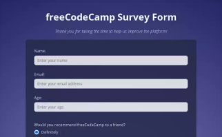

Survey Page
In order to receive the certification, I had to complete several projects (to fulfil the given user stories and pass all the tests). I gave a personal style to each project.
view projectI've just finished a Responsive Web Design Certification on freeCodeCamp!
* the projects in the portfolio were done for the Responsive Web Design Certification on freeCodeCamp, as well as for the 100 Days of Code course by Maximilian Schwarzmüller*
These projects were created as part of the course, with the primary goal of fulfilling the requirements outlined in the specifications for each individual project. As a result, not all functionalities are fully implemented, and the site may not display optimally on mobile devices or screens with significantly higher resolutions than standard.
In order to receive the certification, I had to complete several projects (to fulfil the given user stories and pass all the tests). I gave a personal style to each project.
view projectIn order to receive the certification, I had to complete several projects (to fulfil the given user stories and pass all the tests). I gave a personal style to each project.
view projectIn order to receive the certification, I had to complete several projects (to fulfil the given user stories and pass all the tests). I gave a personal style to each project.
view projectIn order to receive the certification, I had to complete several projects (to fulfil the given user stories and pass all the tests). I gave a personal style to each project.
view projectThis project focused on building and styling forms, exploring attributes like placeholders, rows, and more. It also covered best practices for accessibility and preventing design issues with form elements.
view projectThis is a browser-based Tic-Tac-Toe game project created as part of the 100 Days of Code course. It follows the course code but also includes several custom features and improvements that I added.
view projectFor more information, feel free to contact me: